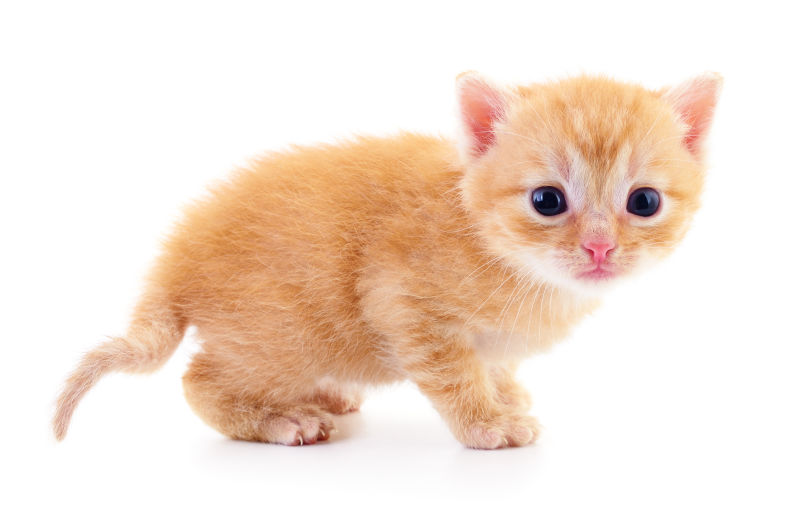

貓，現在成為世界上最為廣泛的寵物之一，飼養率僅次於狗，長期飼養的貓平均壽命為12年以上，歷史上最長壽的貓則達38歲。
基本介紹
貓的感官適於狩獵。在哺乳類動物中，貓的聽覺、視覺、嗅覺、味覺、觸覺極敏銳。
- 聽力：
貓每隻耳各有32條獨立的肌肉控制耳殼轉動，因此雙耳可單獨朝向不同的音源轉動，使其向獵物移動時仍能對周遭其他音源保持直接接觸。 - 視力：
貓在晝間視覺縱不及人類，夜視能力與追蹤視覺上之活動物件卻相當出色，夜視能力是人類的六倍，雖然綜合色彩計算整體視覺系數則僅及人類的十分之一。貓的眼睛具有微光觀察能力，即使只有微弱月光都可分辨物件，有關光線入貓眼後可放大40至50倍處理，令貓具有夜間活動的能力，即使在黑暗的地下室貓咪依然能活動自如。 - 嗅覺：
家貓的嗅覺較人類靈敏14倍。貓的鼻腔內有2億個嗅覺受器，數量甚至超過某些品種的狗（狗嗅覺細胞約1.25億～2.2億）。 - 味覺：
貓早期演化時由於基因突變，失去了甜的味覺，但貓不光能感知酸、苦、鹹味，選擇適合自己口味的食物，還能嘗出水的味道，這一點是其他動物所不及的。
與狗的關係
一般認為貓與狗互相討厭，如狗會咬貓，而許多貓本能上也害怕狗；常見野貓站在高處，狗則在地上吠叫不停。但是，貓狗之間的敵對關係既不是先天基因決定的，也不是任何生物因素造成的。一般情況下，當一方的領地受到外來入侵時，它們自然會變得富有攻擊性。經過訓練及適應，貓和狗有可能理解同一種「語言」並和睦相處。
